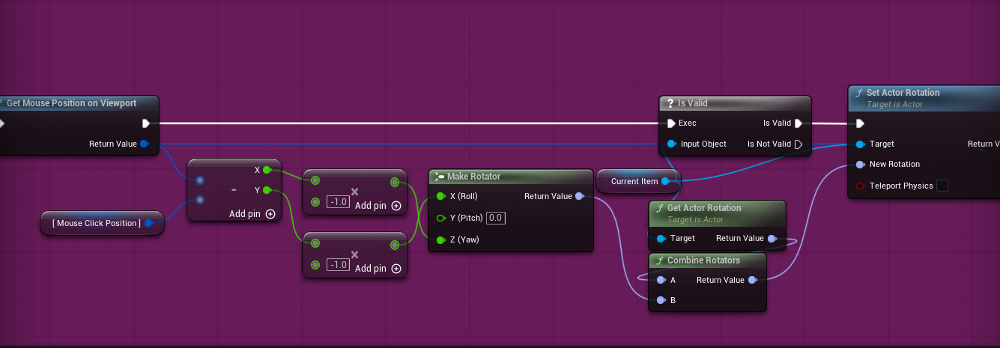
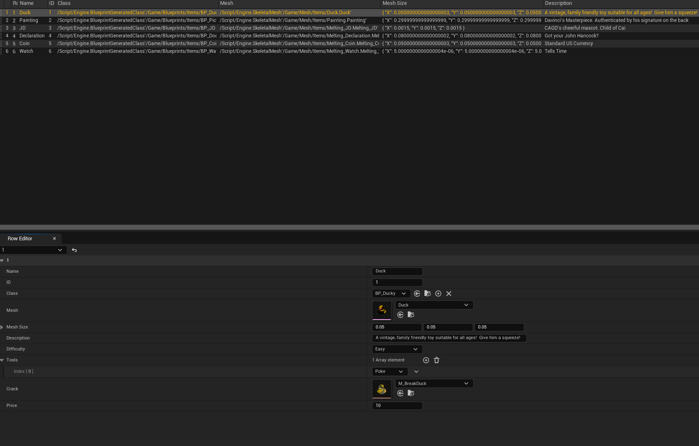
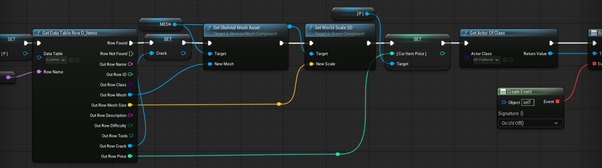
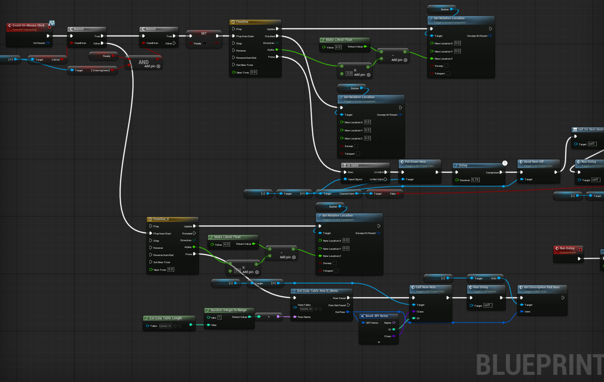

Real Deal is my submission for the 2026 Chico State Local Game Jam, in which we were only given a total of 48 hours to get a working game out, I was the PROGRAMMEr working in a team with a total of 9 people
Below is my Development Process with I go over how the game progressed through the jam, how I dealt with the many problems I encountered, and the new things that I learned during the jam!
Overrall, I think this Game Jam went a lot better than my last one (Global Game Jam 2026) from the get-go, from before the jame even started I already had gotten together with some amazing Programmers and Modelers to put a team together, which removed the problem I had in my previous jam of teammates who didn't pull their weight! For this Jam, the given theme was
After a bit of brainstorming, our team came up with an idea similar to the game Papers Please, where you'd be given items and would have to use clues to determine if the object given to you is a real or a fake using different tools given to you, such as a magnifying glass, brush, UV Light, and More!
The first thing I started on was the player camera and object movement, since getting the objects to spawn in and present themselves to the player in a way that looked nice was one of the most important parts. We had an idea to add a Resident Evil / Fallout 4 style inspection system where you can rotate the object around in a 3D space using your mouse, I'd never made something like this before so I had to kind of figure out on my own how to do, we had a few hickups with some of that spinning being a bit jerky, but we eventually managed to get this fixed

There were some other cool things I did during this game jam that I'd never really touched before but ended up coming out really well, such as when we used a moving texture for the conveyor belt rather than actually moving the mesh, which, with help from one of the other programmers on this team, came out really well!
I think something we definitely had a lot of issues with was item collision detection, the main way we've been taking care of this is clicks, but we'd been having a lot of issues where the clicking system wouldn't work randomly for certain items. After a lot of testing, we eventually discovered this issue was due to the fact that the select meshes of some items we'd added didn't have physics objects, and since there were Skeletal Meshes in Unreal, despite having the click detection channel set to detect correctly, they still didn't, which took us a while to find.
Something I think I am most proud of though is how we handled item data, if you've looked through my Portfolio before it should be obvious just how much I love data tables in Unreal, so I doubt it is any surprise that we decided to go with Data Tables for handling pretty much all of the item data, from how they would cracked if you broke a real item, and even the value. Which ended up working extremely well!


Finally, another thing I am really proud of is how well the button system game out, it has a few hickups if you spam it, which we couldn't manage to patch out since we only had 48 hours, but they are rather rare edge cases that weren't even encountered by any players of the Jam, so for this purpose, they don't matter as much! The button is both used to call in new items and send out items that are believed to be real, which came out really well and functions great!

Overrall, I'm really happy with how this Game Jam turned out, I leanred a lot, got to meet some new people, and I think out game came out exceptionally well, it even made some of the people playing it laugh and get lost in playing the game, playing for almost 15-20 minutes, which is always a win in my book!